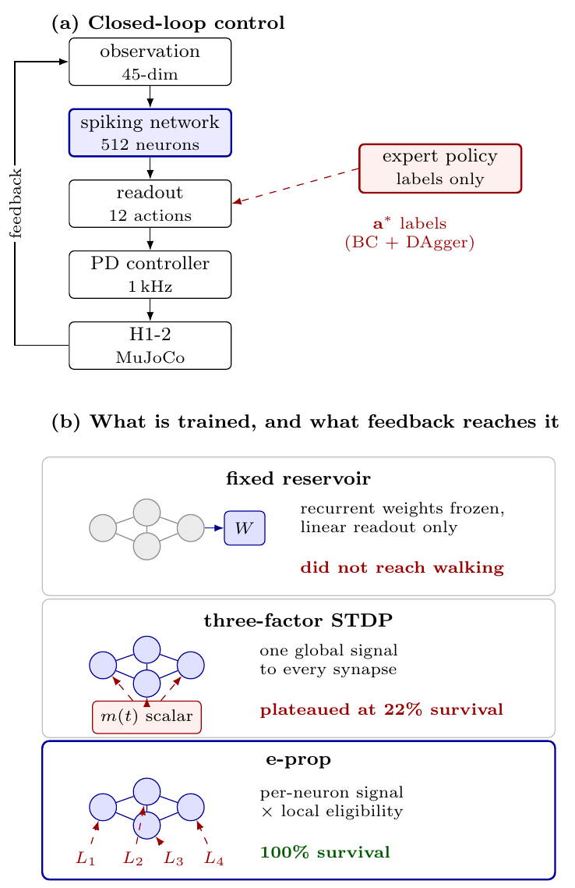
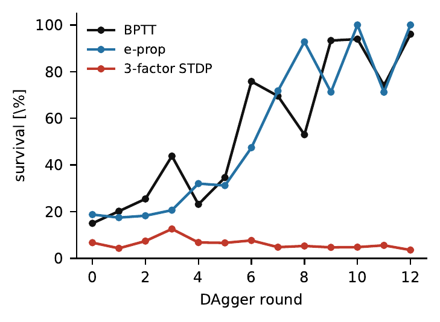
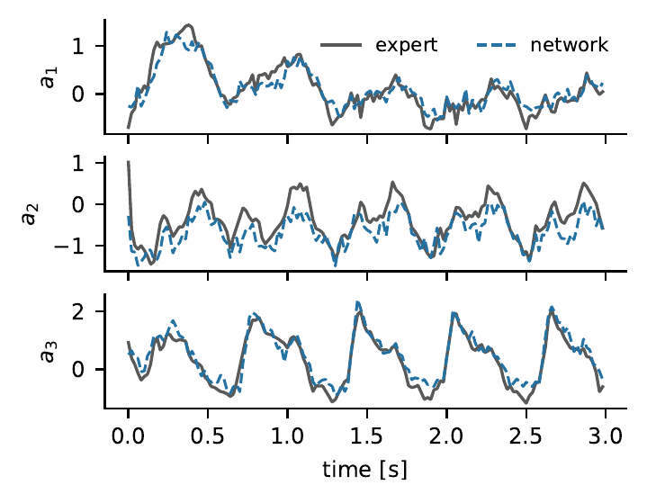

Projects / Spiking neural network control
Spiking neural network control of the Unitree H1-2
Can a network of biological neurons control a humanoid robot? As a first step, I built a simulator of a 3D cortical culture grown on microelectrode arrays, trained it as a closed-loop locomotion controller, and deployed it on the physical Unitree H1-2.
Context
The work sat between two LAAS-CNRS teams: Gepetto, which gave me hardware access to the Unitree H1-2, and MEMS, which grows cortical neurons on 3D silicon microbeads and microelectrode arrays. The simulator reproduces that biological setup, so that the same pipeline can later run on living cultures.
My role
- Built the culture simulator and its compact PyTorch replica.
- Implemented, adapted and compared the learning rules.
- Trained the closed-loop controllers and ran the hardware deployment.
- Wrote the paper as first author.
Method
Culture simulator
- Leaky integrate-and-fire populations in a layered 3D volume, with the array's electrode geometry and its 60 available contacts, built in Brian2.
- Rebuilt as a compact PyTorch replica tuned to cortical firing statistics and validated against recorded activity.
Closed-loop control
- A 45-dimensional observation drives a 512-neuron spiking network. A readout produces 12 joint targets for a 1 kHz PD controller on the H1-2.
- An expert reinforcement-learning policy provides labels only. The network is trained by behavioral cloning, then DAgger.
Learning rules
- Implemented three-factor reward-modulated STDP and eligibility propagation (e-prop), rewriting the neuron and synapse equations in differentiable form with a surrogate gradient so that each rule runs as an online update at the robot's control rate.
- Backpropagation through time served as a non-biological reference.

Results
- 100%survival in simulation with e-prop
- 22%plateau with a single global, dopamine-like reward signal
- Real robotfirst steps on the physical H1-2, driven directly by the network
A globally broadcast, dopamine-like neuromodulator signal could not assign credit to individual neurons, while e-prop, with per-neuron signals, matched exact gradients. A fixed reservoir with a trained linear readout did not reach walking.


Paper
Controlling the Humanoid Robot H1-2 With a Simulated Biologically Plausible Network. F. Atwi, C. Roux, C. Bergaud, O. Stasse. IEEE-RAS International Conference on Humanoid Robots (Humanoids), 2026. The project page has more simulation and hardware videos.